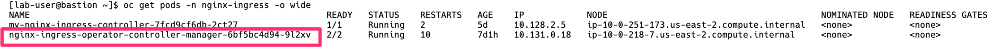
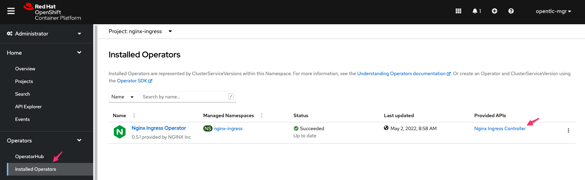
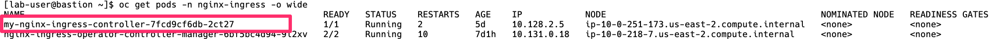
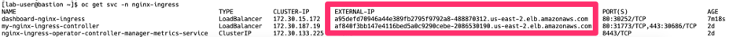
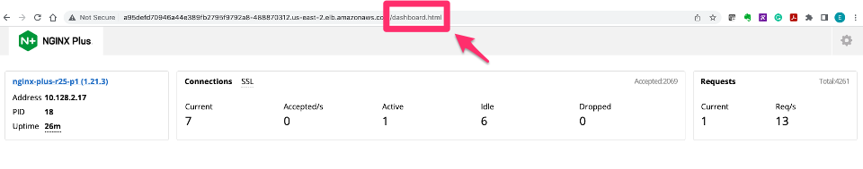
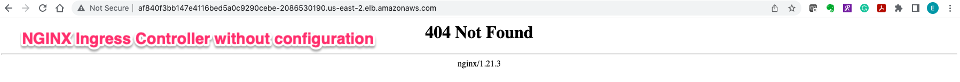

F5 NGINX and Red Hat OpenShift Demo > Class 1: RHPDS Lab - NGINX Kubernetes Ingress Controller For OpenShift > NGINX Kubernetes Ingress Controller For OpenShift Source | Edit on
2. NGINX Kubernetes Ingress Controller | Deployment¶
{kind=link}
2.1. Introduction¶
With the infrastructure in place to support the solution, the NGINX Ingress Controller deployment can begin.
What is NGINX Ingress Controller?
NGINX Ingress Controller provides a robust feature set to secure, strengthen, and scale containerized apps, including:
- Advanced app centric configuration - Use role-based access control (RBAC) and self service to set up security guardrails (not gates), so teams can manage their apps securely and with agility. Enable multi tenancy, reusability, simpler configs, and more.
- Visibility and performance monitoring - Pinpoint undesirable behaviors and performance bottlenecks to simplify troubleshooting and make fixes faster.
NGNIX Ingress Controller has two offerings, an open-source edition and a purchased supported solution. Both solutions come from NGINX; however, there are features and performance differences between the two offerings. Below are popular features and use cases.
{kind=link}
This solution uses the purchased NGINX Ingress Controller.
Kubernetes deployments are typically maintained through manifest files. The deployment of the NGINX Ingress Controller will be created through manifests. Multiple Kubernetes resources can be made through a single file. When executed, Kubernetes will build all the resources.
Kubernetes resources types created:
- Kubernetes namespace
- Kubernetes service account
- Kubernetes cluster role
- Kubernetes clusterrolebinding
- Kubernetes secret
- Kubernetes configmap
- Kubernetes ingressclass
- Kubernetes customresourcedefinitions
- NGINX Ingress Controller deployment
- NGINX Ingress Controller service
NGINX Ingress Operator A Kubernetes Operator is a method of packaging, deploying and managing a Kubernetes-native application. The NGINX Ingress Operator for OpenShift is a supported and certified mechanism for deploying NGINX Plus Ingress Controller for Kubernetes alongside the default router in an OpenShift environment, with point-and-click installation and automatic upgrades.
2.2. Validate the NGINX Ingress Controller¶
In this Lab, we already installed the NGINX Ingress Operator from the OpenShift console.
we also deployed the NGINX Plus Ingress Controller for Kubernetes deployment.
In the terminal window copy the below text and paste+enter, to verify that the Operator is running
oc get pods -n nginx-ingress -o wide

From OpenShift Console, Click Operators -> Installed Operator in the left navigation column. On the page that opens, click the Nginx Ingress Controller link in the Provided APIs column. NginxIngressController is a custom resource which the Operator uses to deploy the NGINX Plus Ingress Controller on the OpenShift cluster.

Validate that the NGINX Ingress Controller is running
Note
If the NGINX Ingress Controller Pod is not in a running state, verify the image:tag value is correct from deployment manifest
run this command in a terminal, to verify that the NGINX Ingress Controller is running:
oc -n nginx-ingress get pods -o wide
Example:

Expose the NGINX Ingress Controller Dashboard
NGINX Ingress Controller (all purchased editions) have an internal dashboard that can be exposed. The Dashboard presents analytic stats of services deployed on NGINX. These same stats can also be exposed for collection systems like Prometheus.
Get the dashboard yaml. Open the yaml file, and update the app selector to my-nginx-ingress-controller-nginx-ingress:
wget https://raw.githubusercontent.com/f5devcentral/f5-digital-customer-engagement-center/main/solutions/delivery/application_delivery_controller/nginx/kic/templates/nginx-ingress-dashboard.yml
apiVersion: v1 kind: Service metadata: name: dashboard-nginx-ingress namespace: nginx-ingress annotations: service.beta.kubernetes.io/aws-load-balancer-backend-protocol: "tcp" spec: type: LoadBalancer ports: - port: 80 targetPort: 8080 protocol: TCP name: http selector: app: my-nginx-ingress-controller-nginx-ingress
Expose the Dashboard. In the terminal window copy the below text and paste+enter:
oc apply -f nginx-ingress-dashboard.yml
See the NGINX Ingress Controller services
Warning
The EXTERNAL-IP values will be used during several parts of the lab, in AWS this is an FQDN. It is recommended to copy these to an easily referenceable location like a clipboard/digital notepad
The deployment of NGINX Controller Ingress contains two Kubernetes services: Ingress and the other for Dashboard.
In the terminal window, copy the below text and paste+enter:
oc get svc --namespace=nginx-ingress
Example:

Export the NGINX Ingress Controller services
Interacting with the NGINX Ingress Controller is more comfortable with exporting the service External IPs into system variables. This allows for templating to take place when we expose our applications.
In the terminal window copy the below text and paste+enter:
export dashboard_nginx_ingress=$(oc get svc dashboard-nginx-ingress --namespace=nginx-ingress | tr -s " " | cut -d' ' -f4 | grep -v "EXTERNAL-IP")
export nginx_ingress=$(oc get svc my-nginx-ingress-controller-nginx-ingress --namespace=nginx-ingress | tr -s " " | cut -d' ' -f4 | grep -v "EXTERNAL-IP")
Browse to the exposed NGINX Ingress Controller services
Note
The Dashboard and the Ingress websites will take a few minutes to become available (1-3 Minutes)
There is nothing yet deployed on NGINX Ingress Controller. However, the Dashboard and the Ingress are active. When the services were created in Kubernetes, Kubernetes created an AWS ELB. These ELBs allow for access to the services, and if the NGINX services ever scale, they will dynamically be added.
NGINX Dashboard URL (replace with the dashboard-nginx-ingress EXTERNAL-IP):
http://EXTERNAL-IP/dashboard.htmlExample:

NGINX Ingress Controller URL (replace with the nginx-ingress EXTERNAL-IP):
http://EXTERNAL-IP/Example:

The NGINX Ingress Controller services have been created and exposed
At this point, we can deploy our applications, and provide access through NGINX!
Proceed to Arcadia Application | Deployment